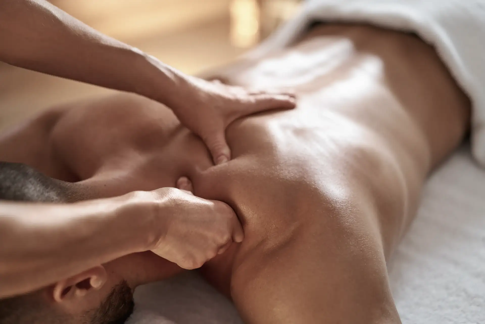

Technique de prévention des troubles physiques et psychiques par excellence, le Massage Tuina fait partie de l’une des nombreuses disciplines de la Médecine Traditionnelle Chinoise. C’est à la fois un massage relaxant et tonifiant travaillant sur le système des méridiens (canaux ou circule le Qi, (Énergie vitale) dans tout l’organisme). C’est un massage spécifique adapté à tous (enfants, adultes et personnes âgées) qui a des effets positifs sur la circulation du sang et de la lymphe, sur la libération des tensions musculaires, et l’apaisement du système nerveux.
Déroulement d’une séance
Suite à un bref entretien (afin d’adapter la technique de massage à vos besoins et attente) vous serez installé en position allongé (sur le dos ou le ventre) sur une table de massage conçue pour un confort optimal (têtière, accoudoirs…).
Le massage peut s’effectue sur la personne habillée (de préférence en tenue souple) ou en sous-vêtements. Pour cette dernière, l’utilisation d’huile sera possible. Pour les femmes, il est toutefois préférable une fois allongée sur le ventre de dégrafer le soutien-gorge afin que votre dos soit bien accessible.
Vous ne serez jamais nu lors d’un massage et ne comportera aucun geste sexuel.
Des huiles neutres certifiées BIO uniquement seront appliquées afin d’écarter tout risque de réactions allergiques.
La durée du massage Tuina est de 1 h.
C’est un soins complet regroupant l’utilisation de techniques diverses tels que des mouvements de glissement, pression, frottement, vibration ou encore l’utilisation de ventouses. Ces techniques se pratiquent sur différentes parties du corps comme le cou, le dos, les lombaires les bras,les jambes les pieds et les mains).
Pour les enfants, la durée de massage conseillé est de 30 min.